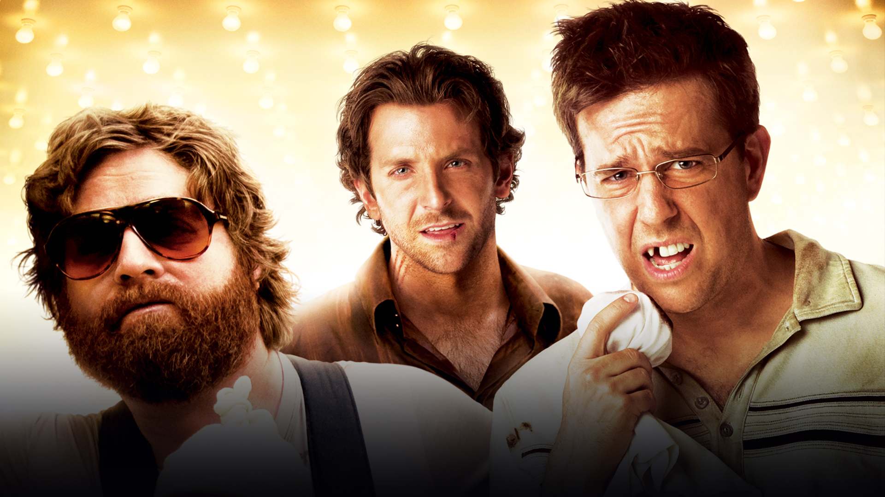

-
Super Bad - É hoje!
"Superbad - É Hoje" é uma comédia americana de 2007, dirigida por Greg Mottola e produzida por Judd Apatow. Escrita por Seth Rogen e Evan Goldberg, o filme é uma crônica hilariante sobre a adolescência, a amizade e as desventuras no final do ensino médio. Seth (Jonah Hill) e Evan (Michael Cera) são dois melhores amigos inseparáveis no último ano do ensino médio. Prestes a se formarem, eles estão determinados a aproveitar ao máximo uma das últimas festas antes de seguirem caminhos diferentes na faculdade. O plano é simples: comprar álcool e impressionar suas paixões, Jules (Emma Stone) e Becca (Martha MacIsaac), na esperança de finalmente conquistá-las. "Superbad - É Hoje" é uma escolha perfeita para quem busca uma comédia adolescente irreverente e engraçada, mas com um toque de sinceridade emocional. O filme captura com precisão as ansiedades e os desejos dos jovens prestes a deixar o ensino médio, misturando humor inteligente com momentos tocantes.
-
Todo mundo em Pânico!
"Todo Mundo em Pânico" é uma comédia de terror lançada em 2000, dirigida por Keenen Ivory Wayans. Este filme é uma paródia hilariante que faz uma sátira de vários filmes de terror populares dos anos 90, incluindo "Pânico", "Eu Sei o que Vocês Fizeram no Verão Passado" e "A Bruxa de Blair". Na cidade fictícia de Middle America, um grupo de adolescentes vive uma rotina aparentemente normal até que se tornam alvo de um assassino mascarado. Cindy Campbell (interpretada por Anna Faris) é uma jovem estudante que, junto com seus amigos, tenta sobreviver aos ataques cômicos e absurdos do assassino. Se você gosta de comédias que brincam com os clichês dos filmes de terror, "Todo Mundo em Pânico" é a escolha perfeita. Com um humor irreverente, situações absurdas e performances hilárias de seu elenco, o filme garante risadas do começo ao fim. É uma sátira inteligente e bem-humorada que faz referência a vários sucessos do gênero de terror, tornando-se um clássico das comédias paródias.

Se Beber, Não Case!
"Se Beber, Não Case!" é uma comédia hilária que segue a desventura de quatro amigos – Phil, Stu, Alan e Doug - que viajam para Las Vegas para uma despedida de solteiro inesquecível. No entanto, após uma noite de festas descontroladas, eles acordam sem nenhuma lembrança do que aconteceu na noite anterior e descobrem que o noivo, Doug, está desaparecido. Com apenas algumas horas antes do casamento, os três amigos precisam refazer seus passos, desvendando pistas e situações absurdas, para encontrar Doug e levá-lo de volta a tempo para a cerimônia. Enquanto tentam reconstruir os eventos da noite anterior, eles se envolvem em uma série de situações cômicas e inesperadas, revelando segredos e enfrentando personagens excêntricos que tornam essa aventura em Las Vegas uma experiência inesquecível. "Se Beber, Não Case!" é um filme perfeito para quem procura uma comédia leve e divertida. Com um enredo repleto de reviravoltas cômicas e situações inusitadas, este filme é ideal para assistir com amigos e dar boas risadas. A química entre os atores Bradley Cooper, Ed Helms, Zach Galifianakis e Justin Bartha é contagiante, e as atuações garantem momentos de pura diversão. Prepare-se para uma jornada cheia de risadas e surpresas em Las Vegas.